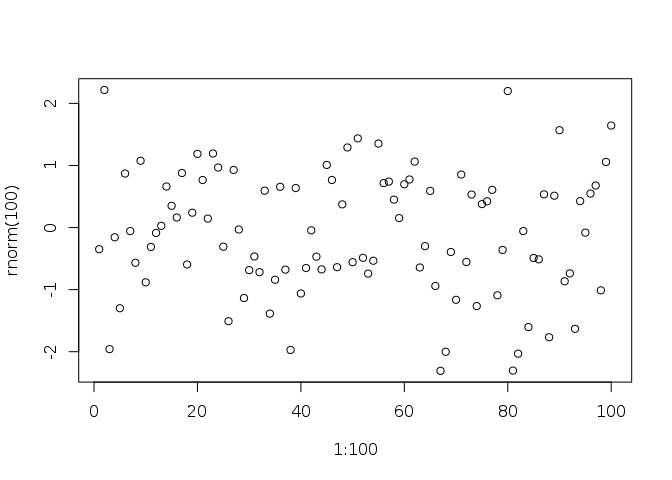

Posted on January 8, 2015
Mizer playtime
Philipp Neubauer
06/01/2015
Finally, underway, the website halfway up and passing Travis-CI; time to get this MArsden research rolling!
My plan is to start with some inital playing around with mizer, check out the source code (and try to udnerstand it!) together with the vignette, then start checking out some climate options etc.
Had a quick look at the source, and it looks like well written obect oriented R. Hooray! Installed the package locally from my fork, in case I want to mess with it. I do want to mess with it. Do some vignette play:
plot(1:100,rnorm(100))
